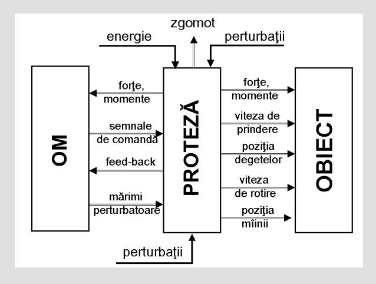

În cazul unei proteze de antebraţ ce asigură prehensiunea şi supinopronaţia gradele de mobilitate vor fi caracterizate prin:
- viteza/timpul de deschidere /închidere (ωd, nd)
- viteza şi timpul cu care se realizează mişcarea de supinopronaţie (ωs, ns);
Obiectul va determina prin:
- greutate (G),
- gabarit (Φ)
- natura suprafeţei sale (µ)
Forţele şi momentele necesare a fi dezvoltate de proteză în vederea manipulării- obiectul va influenţa deci, atat sistemul tehnic (proteza) cît si pe purătorul acestuia care trebuie să fie capabil să genereze comenzile necesare realizării mişcărilor.
